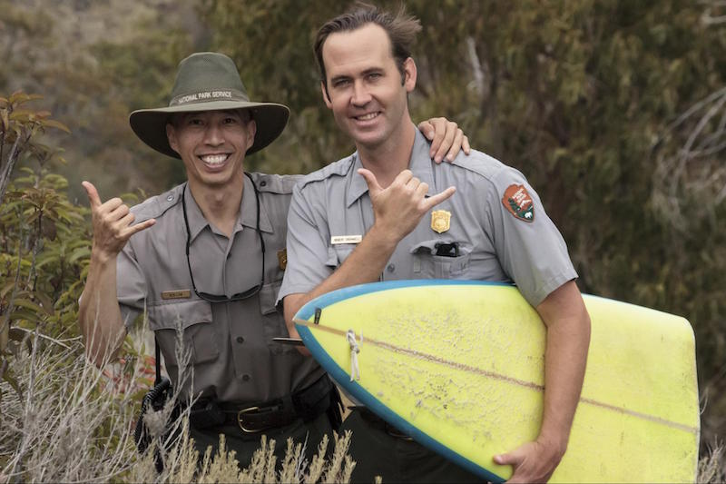

Title: 2029 Season Posted
Author: Phil Terry
Tags: announcement, desert spin, extreme snorkeling, space jumping
Created: 1/12/2029
Thank you again, everyone, for an excellent 2028 season. You guys helped us reach new heights, both literally and metaphorically. This year we have a bang-up series of tours in store for you, including one new extreme activity never seen before:
- S(BASE) Jumping: It’s not cheap, but you won’t find this signature thrill anywhere but at MagnifAscent. Jump from a low-orbit shuttle into the BASE jump of a lifetime. We’re doing this only once this year, and are limited to 5 seats. Sign up now!
- Extreme Snorkeling: A favorite of our adventurers returns this year, with two events, one on April 16, and a second on July 10.
- Desert Spin: If you survived last year’s Spin, join us again for one (or both!) or our stationary cycling in the super hot sun! And bring along a friend for the pain and a discount. We have one tour on May 2 and our second one on June 20.
- Cathartic Tunneling: This tour is perfect for those who want to engage in a spiritual journey and build up some upper body strength at the same time. Last years Adventurers made a lot of progress, and we expect to see the same thing in this year’s crew. We have a tour starting June 6 another on August 4.
- Pogo Mountain Marathon: If you always wanted to become a pogo master but your parents never bought you one, join us for a one-of-a-kind journey in the mountains. Disclaimer: Pogo sticks are returned upon tour completion. We have a tour starting June 6 and another one on August 29. It’s a perfect way to end the summer!
Occasionally we may make modifications to the calendar, so be sure to check it before making your reservation.
If you’re new to MagnifAscent, drop us a line with some of your interests and we’ll find you the best guide / tour combination for your needs. If you’re a returning Adventurer, just log in and reserve your spots now!
